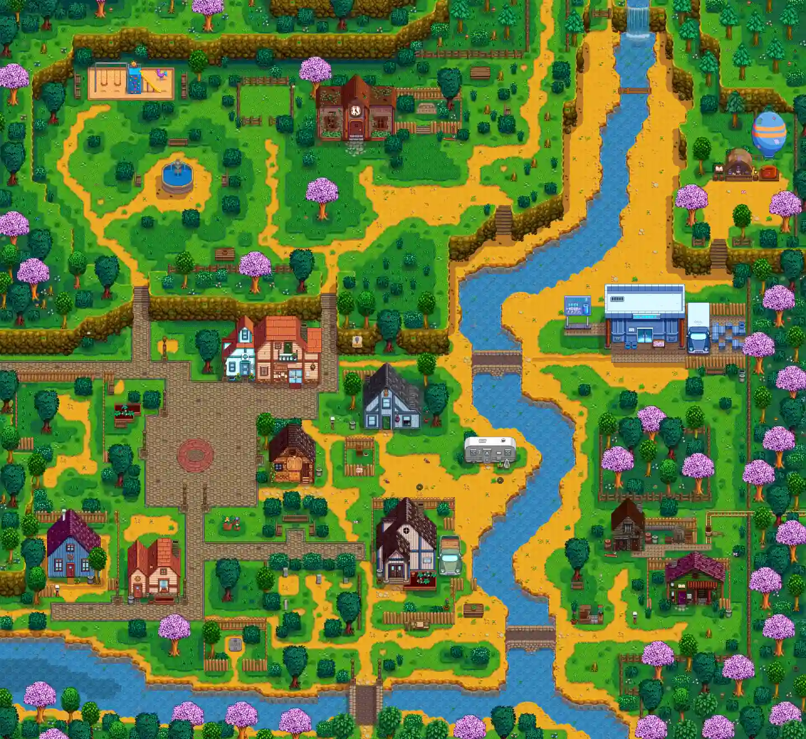
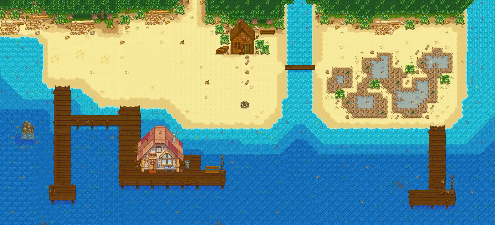
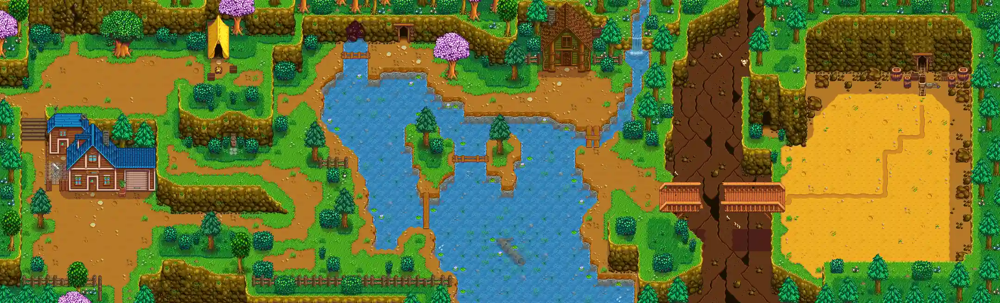
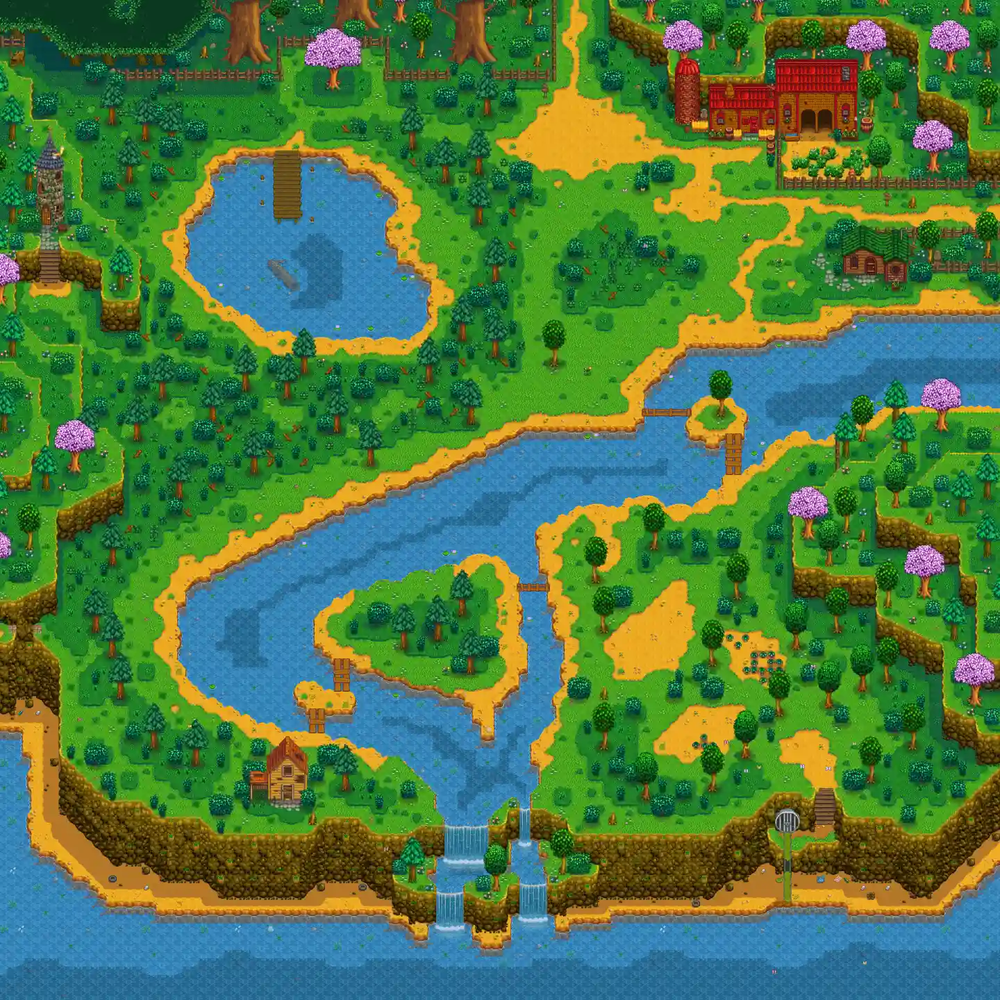
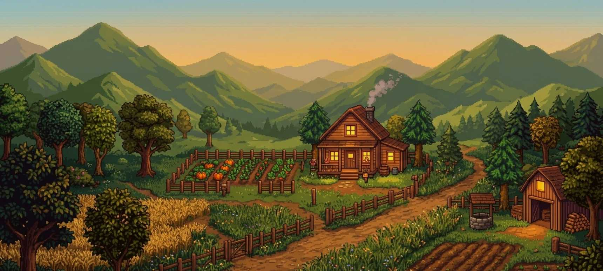

Pueblo Pelícano
La plaza, las tiendas y las casas hacen del pueblo el punto de encuentro de la comunidad y el corazón social del Valle.
Conocer a sus habitantes →Cada lugar ofrece algo que hacer y una razón para volver
Al llegar a Stardew Valley, encontramos un pueblo atravesado por una tensión sencilla pero profunda: el Centro Cívico (un lugar emblemático de Pelican Town) está en ruinas, mientras que Joja Corporation tiene cada vez más poder y busca destruirlo para poner un almacén.
La historia se cuenta a través de la gente y son nuestras decisiones las que determinan su rumbo. Por eso muchas de las actividades que parecen secundarias terminan formando parte de la experiencia completa.

La plaza, las tiendas y las casas hacen del pueblo el punto de encuentro de la comunidad y el corazón social del Valle.
Conocer a sus habitantes →
Un lugar para pescar, recolectar y cambiar el ritmo del día junto al mar.
Seguir hacia la pesca →
El lago, la carpintería y el camino hacia las minas hacen de esta zona una puerta natural a la aventura.
Seguir el camino →
Un desvío de recolección, agua y caminos donde muchas veces el paseo empieza a convertirse en descubrimiento.
Seguir explorando →
La granja es el punto de partida de tu nueva vida en el Valle. Lo que al principio parece un terreno inmanejable puede transformarse en un espacio lleno de cultivos, animales, edificios y caminos, construido a partir de las decisiones que tomás cada día.
Conocer la granja →Más allá de los cultivos y de la vida cotidiana de Pueblo Pelícano, aparecen lugares inesperados. El lago, el bosque, las minas y la costa ofrecen recursos, desafíos y pequeñas sorpresas que hacen que cada recorrido pueda llevarte a algo nuevo.
Explorar el Valle →